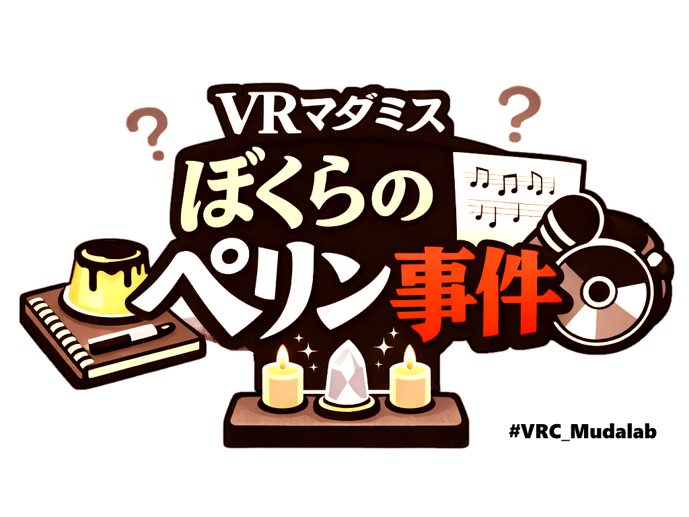
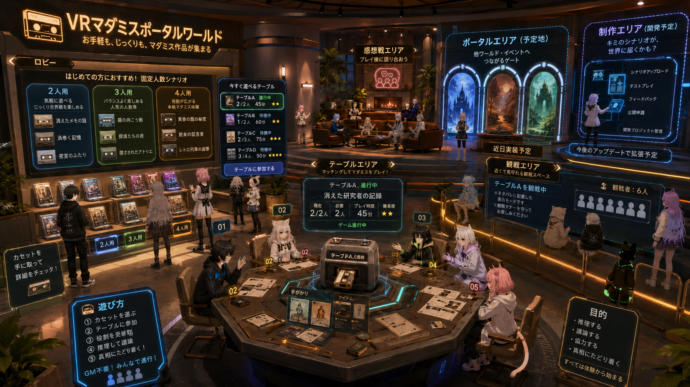
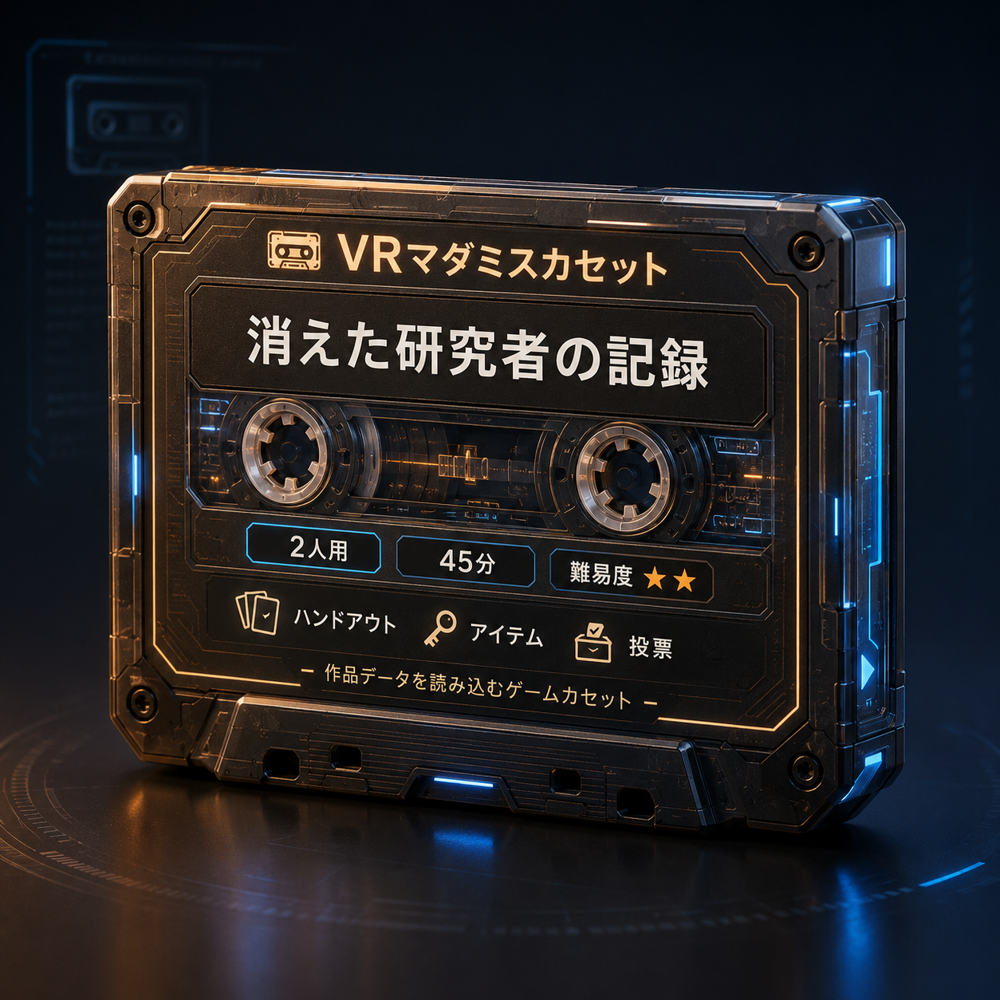
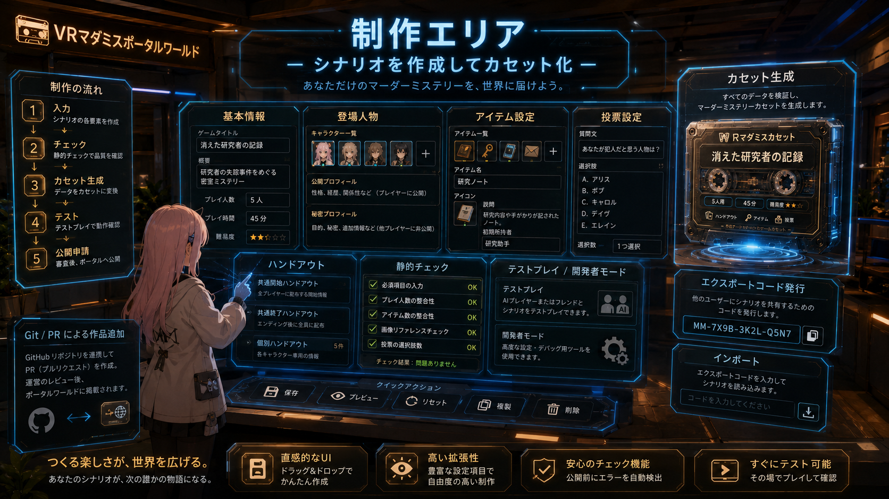

VRChat Murder Mystery Portal
VRマダミス
ポータルワールド
お手軽も，じっくりも。マダミス作品が集まったVRChatマダミスポータルワールド。
Previous Work
前作はGMレスVRマダミスとして成立

4人専用
固定人数で，個別ハンドアウト，秘密，投票，エンディング分岐を設計。
観戦対応
参加者以外も進行を追える。プレイ後に観客も感想戦へ入りやすい導線を持つ。
約240分
前半120分，後半90分，準備等30分の長時間体験。濃い一方で参加ハードルも高い。
KPT
体験の核は有効，制作負荷と参加ハードルが課題
Keep: 次回作でも残す体験
- 個別ハンドアウトを作り込むことでGMレス進行が成立した。
- 密談，アイテム公開・譲渡，QvPenはVR空間の会話ゲームとして有効だった。
- ユーザーステート管理，ハンドアウトとアイテムのリスポーン，全員同意のフェーズ移行は安心感を作った。
- 観戦システムと感想戦導線は，参加者以外も体験に関われる余地を作った。
- 真実の情報はアイテム，口頭情報は嘘も可能という整理により，議論と推理の軸が明確になった。
- エンディング分岐と個人目標により，単なる正解当てではない動機づけが生まれた。
Problem: 次回作で解く制約
- 4人固定かつ約240分で，遊ぶまでの人数・時間ハードルが高い。
- 複数事件・複数フェーズの整合性確認が重く，脚本制作に時間がかかった。
- フェーズ，投票，アイテム，エンディングが密結合で，実装を再利用しづらい。
- VRChat同期・所有権まわりの検証負荷が高く，テストプレイも長時間化した。
- ハンドアウトを持ち歩く負荷があり，特にデスクトップモードでは情報確認が重かった。
- ワールド開発，脚本制作，アイテムモデリングの分担境界が曖昧だった。
Try: 次回作の設計テーマ
カセットシステム
脚本のGit分離
Publicマッチング
2人・3人・4人作品
観戦の独立化
ハンドアウト改善
少人数テスト
静的チェック
制作分担
専用ワールドポータル
From KPT To Next Work
次回作: VRマダミスポータルワールド
前作から分かったこと
- VRChat上のGMレスマダミス体験は成立する。
- 密談，アイテム，観戦，感想戦は次回作でも核になる。
- 一作品ごとに専用実装すると制作・検証が重い。
次回作で作りたいもの
- カセットを選び，人数が揃ったテーブルから遊べる場。
- 2人・3人・4人作品を並べ，Publicでも始めやすい場。
- 凝った専用ワールドや他制作者作品にも出会える場。

作品カセットを選び，テーブルへ
人数が揃ったらマダミス開始
テーブル周辺で観戦も可能
終了後は感想戦エリアへ
ポータルエリアから他作品にも行ける
制作エリアでオリジナル作品も作れる
Cassette System
作品をカセット単位で選び，共通基盤に読み込む

カセットの役割
カセットは，作品データと遊び方のまとまり。テーブルにセットすると，人数，ハンドアウト，アイテム，投票設定を共通基盤へ読み込む。
集まった人数で遊べる
- 2人用，3人用，4人用など，参加人数の異なる作品を同じ棚に並べる。
- 来場者は今いる人数に合うカセットを選び，テーブルで開始できる。
- 複雑な作品は，専用ワールドリンクカセットとしてポータルエリアに配置する。
カセットに含む情報
基本設定，プレイヤー設定，アイテム設定，投票設定，開始・終了ハンドアウト。
Cassette Data And Git
Gitと同期することで作品カセットを追加できる
{
"gameId": "sample-2p-001",
"title": "消えた招待状",
"summary": "2人用の短編マダミス",
"players": {
"min": 2,
"max": 2,
"recommended": 2
},
"phases": ["handout", "discussion", "vote", "result"],
"characters": [
{
"name": "A",
"publicProfile": "招待状を受け取った客",
"secretProfile": "昨夜，招待状を隠した"
}
],
"items": [
{
"name": "破れた封筒",
"owner": "table",
"publicText": "封筒の端が破れている"
}
],
"vote": {
"commonQuestion": "招待状を消した人物は？",
"choices": ["A", "B"]
}
}
Git管理する理由
- 脚本とワールド実装を分離する。
- 差分レビューで作品追加を管理する。
- PRマージ後にカセット棚へ反映する。
JSONで持つ情報
- ゲーム名，概要，人数，フェーズ
- キャラクター公開情報・秘密情報
- アイテム情報，初期配置，投票設定
Creation UI
制作エリア: マダミスを作り，カセット化する

1
JSONデータ作成UI
基本設定，プレイヤー設定，アイテム設定，投票設定をワールド内UIで入力する。
2
カセット生成
入力結果からカセットを生成し，テーブルにセットして遊べる状態にする。
3
エクスポート
生成したカセットを外部共有用コードとして出力する。
4
インポート
共有されたコードを入力し，同じカセットをワールド内で再生成する。
Adoption Flow
制作したマダミスを正式採用する流れ
マダミス製作者
ワールド内UIで作品を作成
ワールド内UIで作品を作成
静的チェック
整合性を確認
整合性を確認
PR または SNS で共有
ワールド開発者
ガイドライン観点で確認
ガイドライン観点で確認
マージ後
カセット棚へ自動追加
カセット棚へ自動追加
1
静的チェック
カセット生成前に人数，項目数，画像参照，投票設定の整合性を確認する。
2
共有
コードをPRとして送る。SNS等で開発者へ共有する経路も許容する。
3
レビュー
開発者側でガイドライン観点を確認する。初期は公序良俗などのガードレール中心。
4
追加
マージ後，自動的にカセット棚へ追加され，テーブルエリアで選べるようになる。
MVP
まずは1テーブル・固定人数作品・Git分離で検証
MVPで作るもの
1テーブル
カセット選択
2人用・3人用・4人用カセット各1本
固定フェーズ構成: ハンドアウト確認，議論，投票，発表
作品データのGit分離
ハンドアウトのリスポーン
公開済み情報・アイテム確認
観戦エリア
開発者モード
作品データ静的チェック
ポータルエリア・制作エリアの予定地
MVPで作らないもの
専用ギミック追加
複雑なフェーズ編集
観戦者の高度な音声聞き分け
複数テーブル同時稼働
人数可変作品の自動役職調整
ポータルエリアの実機能
制作エリアの実機能
Next Actions
技術検証と小規模作品制作から始める
リスク
- カセット差し替えの実現性
- テーブル単位の状態管理
- Publicマッチング成立性
- 初期作品数不足
次アクション
- カセットデータ形式の試作
- 1テーブル進行プロトタイプ
- 2人用短編の試作
- 静的チェック仕様の作成
- 観戦エリアの技術検証